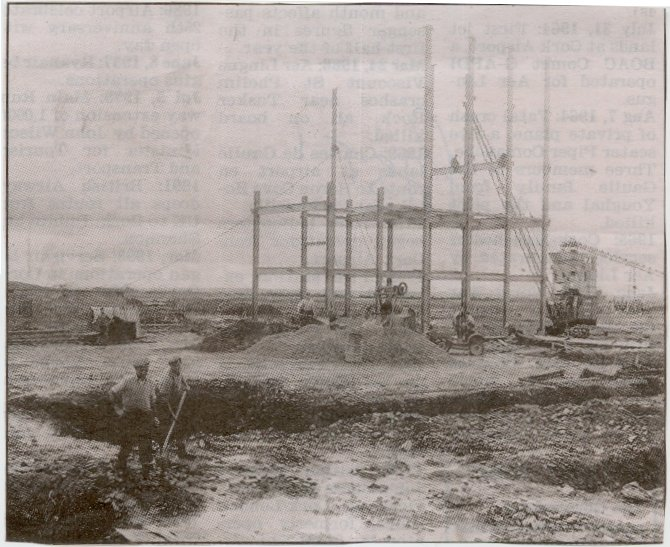
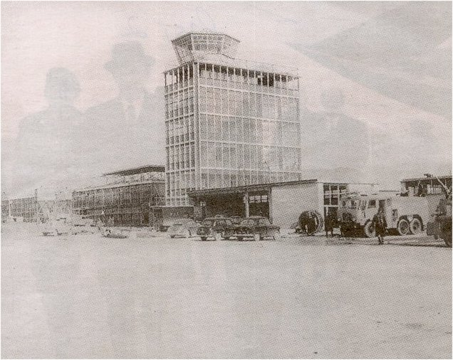
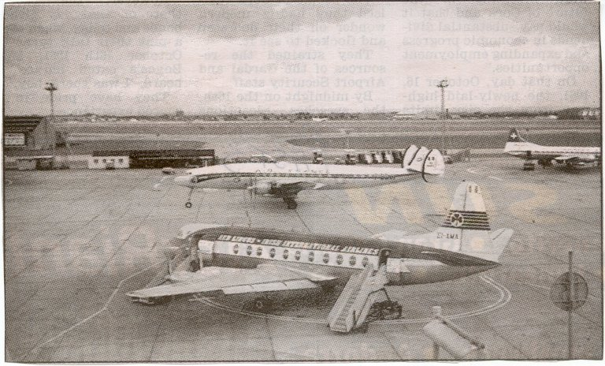

Aer Rianta |
Cork Airport |
|
SITE INDEX
|
|
|
Cork Airport opened on the 16th October 1961. The first plane to touch down was an Aer Lingus Viscount carrying the Taoiseach Sean Lemass and his wife, Cork's own Jack Lynch who was the minister for Industry and Commerce, the Lord Mayor of Dublin Robert Briscoe and senior officials of Aer Lingus. They were greeted by the then Lord Mayor of Cork Anthony Barry and Airport manager Vincent Fanning. There were six flights in and out of the airport on the first day. Cambrian Airlines operated two flights using DC3's then called Dakotas from Londons Heathrow. Jacob's Biscuits chartered a plane to fly to London, among their guests were Cork Hurler Christy Ring, rugby star Tony O'Reilly and Cork Hurling trainer Jim 'Tough' Barry. This was the first passenger carrying plane to fly out of Cork. Leading the official Irish party was the Lord Mayor of Cork. The Viscount aircraft St. Aodhan was delayed over Heathrow for 42 minutes before landing due to a backlog of flights The much discussed Cork - Dublin schedule operated for the first time that day. |
 |
|  |  |